“A careful thinker who builds with intention and clarity.”
Ali Khan · Professor, UET TaxilaI'm Saeed.
Builder, Reader and Perpetual Learner


Builder, Reader and Perpetual Learner
The long version. Pre-med, the gap year, the switch.
A fuller account of the path that led to this work.
What I'm actually working on this season.
An account of the current build, study, and practice loop.
Iqbaliat, HMS Tracker, and the rest of the build log.
An in-browser study of Iqbal across Urdu, Farsi, and English.
Notes that didn't fit anywhere else.
Fragments on systems, reading, and the discipline of making.
Notes that didn't fit anywhere else.
Fragments on systems, reading, and the discipline of making.
HMS Clicks — what the macro lens finds.
Quiet observations that reward attention over spectacle.
FEATURED — 01
An in-browser study of Iqbal's intellectual transformation across Urdu, Farsi, and English.
Built for readers who want to trace an idea across three languages without losing the thread.
Vanilla JS · custom MVC
A study in disciplined tracking and system visibility.
Built to keep the important details legible without clutter.
A compact archive of work, study, and documentation.
Structured to feel like a reference rather than an archive dump.
Short notes from people who saw the work in motion.
“A careful thinker who builds with intention and clarity.”
Ali Khan · Professor, UET Taxila“The structure feels thoughtful, calm, and genuinely original.”
Nida Shah · Design collaborator“Every system feels grounded in purpose rather than decoration.”
Hamza Farooq · Software peer“The writing and the interface share the same quiet confidence.”
Sana Malik · Reader and editor“There is restraint in the work, and that restraint is powerful.”
Adeel Iqbal · Mentor“The projects feel like they were built by someone who notices.”
Noor Fatima · Community partner“The work has a rare balance of rigor and calm.”
Osama Rehman · Research assistant“It feels less like a portfolio and more like a point of view.”
Hira Zaman · Creative writer“The thinking behind the code is as strong as the visuals.”
Farhan Siddiqi · Frontend peer“The site feels alive without trying too hard.”
Mehwish Babar · Photography friend“Every detail communicates discipline and patience.”
Imran Aslam · Systems student“An unusually clear voice for a young builder.”
Rabia Arif · Academic mentorWant to work together or just say hello?
Say Hello